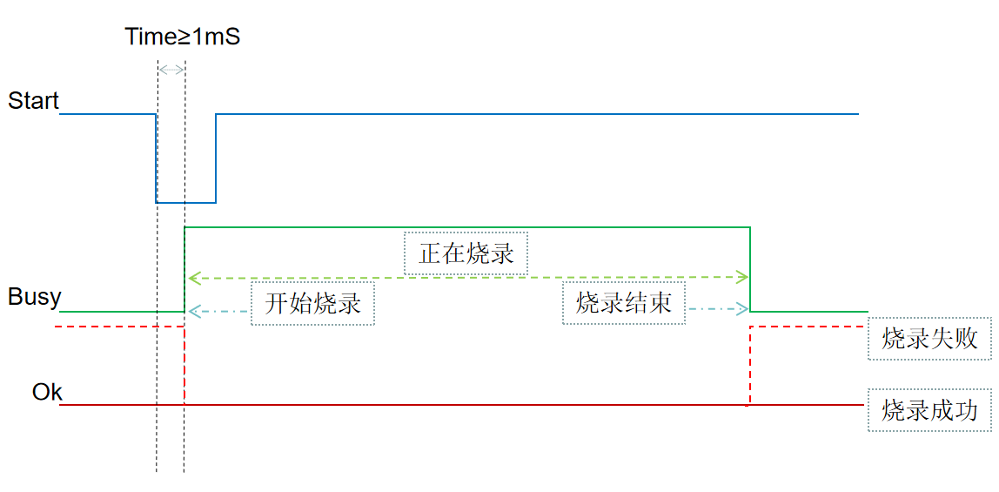

1.3. Automated Programming with a Handler
1.3.1. Introduction to automated programming
Purpose
Manual programming is slow. Automated programming with a handler greatly increases programming speed and solves the problem of low manual programming efficiency.
How it works
The handler controls automated programming through IO signals on the programmer, replacing the work of two manual programming steps: starting programming (pressing the Start button by hand) and determining the programming result (visually checking the red and green lights on the Start button). A robotic arm places the chip in the adapter socket and starts programming; the handler monitors the programming status indicated by the IO signals in real time, then evaluates and handles the programming result.
1.3.2. IO control signals for automated programming
1.3.2.1. IO control signal lines
Connect the handler's automated programming control lines to the "automated programming IO control signal lines" (自动烧录IO控制信号线) of the adapter board; see the "Adapter board introduction and installation" section. The programmer has control signal lines for two channels. Each channel has a Start signal line, a Busy signal line, an Ok signal line, V3.3V and GND. The control signal lines are described in the table below.
No. |
Type |
Start (Start button) |
Busy (green light) |
Ok (red light) |
|---|---|---|---|---|
1 |
Signal description |
Handler to programmer |
Programmer output to handler |
Programmer output to handler |
2 |
Initial state |
High |
Low (green light off) |
Low (red light off) |
3 |
Start programming |
Low (for more than 1mS, then pulled high) |
/ |
/ |
4 |
Programming in progress |
/ |
High (green light on) |
Low (red light off) |
5 |
Programming succeeded |
High |
Low (green light off) |
Low (red light off) |
6 |
Programming failed |
High |
Low (green light off) |
High (red light on) |
Important
Start signal line: when the input IO pin of the Start button is held low for more than 1mS, the programmer starts programming. A low time of 2mS~20mS is recommended; a somewhat longer low time does no harm. When the Start button is pressed, the
Start signalis low; when it is released, the signal is high.
Busy signal line: when the Start signal has been pulled low for 1mS or longer, the IO pin of the
Busy signal lineoutputs a high level (rising edge) and the programmer starts programming; this corresponds to the green light on the Start button turning on. When programming ends, the IO pin of theBusy signal lineoutputs a low level (falling edge), which corresponds to the green light on the Start button turning off.
ok signal line: on the rising edge of the
Busy signal line, i.e. when programming starts, theok signal lineis pulled low (its initial state is either low or high). The falling edge of theBusy signal linemarks the end of programming: if programming succeeded, theok signal lineis pulled low (the red light on the Start button is off); if programming failed, theok signal lineis pulled high (the red light on the Start button is on).
The
V3.3Vpin of the control signal interface is a 3.3V power supply provided by the programmer; connect it as required by the handler's control module. TheGNDpin of the control interface must be connected to the GND of the handler's control module;
For a more intuitive understanding, see the automated programming section "IO control signal timing".
1.3.2.2. IO control signal timing
The timing of the automated programming IO control signals is shown in the figure below. Read it together with the description of the IO control signal lines above.

1.3.3. Automated programming procedure
1.3.3.1. Preparing for automated programming
Before programming chip firmware automatically, make sure you have carried out the relevant operations in "Manual Programming, Verification and Blank Check" to prevent problems during programming. The preparation includes:
Power on the programmer before programming and wait for the normal ready screen (see the "Power on the programmer" section)
Confirm that the programmer firmware is the required version, or update it (see the "Checking and updating the programmer firmware version" section; check this from time to time)
Confirm that the target chip firmware in the programmer is the firmware to be programmed, or update it (see the "Deploying the target chip firmware to the programmer" section)
Confirm that the programmer's working mode is Programming mode, or set it (see the "Programmer working modes: introduction and setup" section)
Set up the programming environment of the automated programming handler.
Install the programming socket for the corresponding model on the programmer; see "Adapter board introduction and installation".
Install on the handler the
socket into which the robotic arm places the chips, which is connected to the programmerWire the handler's IO control signal lines as described in "IO control signals for automated programming" above.
Set up loading and unloading for tray-packed or tape-and-reel chips; unloading separates good parts that were programmed successfully from defective parts that failed programming.
Debug the overall programming flow of the automated programming environment.
1.3.3.2. Automated programming flow
Once the preparation is complete, you can program chips automatically. The automated programming flow of the handler is roughly as shown in Automated programming flow:

Automated programming flow
The table below describes the automated programming flow.
Workflow
Description
Preparing for automated programming
See the previous section, "Preparing for automated programming"
Machine places the chip
Corresponds to the manual step of picking up a chip and placing it in the dedicated programming socket
Handler sends the Start signal to start programming
When the handler drives the input IO pin of the
Start buttonlow for more than 1mS,
the programmer starts programming; this corresponds to briefly pressing theStart buttonby handDetermining the programming result
The handler reads the Busy (green light) and Ok (red light) signals of the Start button
and uses the IO signal states to determine whether programming succeeded or failedRobotic arm removes the chip
If programming succeeded, the machine removes the chip and places it in the good-parts area for taping;
if programming failed, the robotic arm removes the chip and places it in the defective-parts area